| 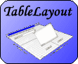 |
|
TableLayout Download
The latest version of TableLayout can be downloaded from
here.
The complete source code for examples given in this article can be
found here -- note that the version
of TableLayout used by these examples is not the latest version.
Java Web Start Download
Java Web Start allows you to launch the examples in this article from your web browser. Download
Java Web Start from
here.
Print
A printable Word document of this article is available
here.
TableLayout is a layout manager that partitions a container into a set of rows and columns. The intersection of a row and a column is called a cell, like in a spreadsheet. Components added to the container are placed in cells. As the container is resized, the cells are also resized. Consequentially, the components inside those cells are resized.
To illustrate, consider a simple frame divided into four columns and five rows as show in the following illustration. 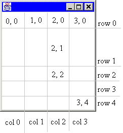 Notice that not all of the rows have the same height. Every row can be assigned a different height. Similarly, every column can be assigned a different width. As the container is resized, every row and column is also resized according to its specification.
| Side Note |
| Anything said about a row also applies to a column and vice versa. For example, whatever you can say about a row's height, you can also say about a column's width. TableLayout is symmetrical in the x and y dimensions. So for brevity, this document will discuss such symmetical issues in the form of columns and horizontal values. |
The rows and columns are marked in the illustration. Notice that the first column is column 0. Also notice that the cells are labeled as (column, row). This is anologous to (x, y) coordinates. The upper-leftmost cell is (0, 0) and the bottom-rightmost cell is (3, 4). The gray lines dividing the rows and columns are imaginary. You do not see them in the container.
The illustration shows the division of the container at a one possible size. What happens when the container is resized? That depends on how the rows and columns are specified. It might be desirable for each column to be given an equal width, or you may prefer the first three columns to be fixed and the fourth column to be given all remaining space.
There a five ways to specify the width of a column. A column can be be given an absolute width in pixels, a percentage of available space, an equal portion of all remaining space, a width determined by the preferred size of the components occupying that column, or a width determined by the minimum size of the components occupying that column.
For the above illustration, let's assume that we want all columns to have an equal width, row 1 to be resized with the container, and all other rows to have a fix size. The following code will create the frame.
public static void createFrame ()
{
Frame frame = new Frame();
frame.setBounds (100, 100, 300, 300);
frame.show();
double size[][] =
{{0.25, 0.25, 0.25, 0.25},
{50, TableLayout.FILL, 40, 40, 40}};
frame.setLayout (new TableLayout(size));
}
|
Notice that creating a TableLayout involves two steps. First, a two-dimensional array of doubles is created to
specify the column widths and row heights. Second, the TableLayout itself is created using this array. The
length of size is 2. size[0] contains the widths of each column, and size[1]
contains the height of each row.
The column widths are specified as 25% or 0.25. All real numbers in the range [0.0..1.0) represents percentages. Notice that the upper end of this interval is open. The value 1.0 does not mean 100%. It means 1 pixel. However, there is a way to give a column 100% of the scalable space. This is discussed below. The value 0.0 can be interpreted as either 0% or 0 pixels.
The first row, row 0, is allocated exactly 50 pixels. All non-negative integers refer to absolute pixel sizes.
Rows 2 to 4 are allocated 40 pixels. Row 1, specified with the constant FILL is allocated 100% of
the scalable space. The term FILL means to fill this row with the remaining space.
There are a variety of ways to define the sizes of columns and rows.
The total width of the container is called the total width. The sum of the widths of all columns allocated an absolute pixel size is called the absolute width. The total width minus the absolute width is called the scalable width.
Columns specified with an absolute width are absolute columns. Columns specified with percentages are
called scalable columns. There are also fill columns and preferred columns which are
specified with the FILL and PREFERRED TableLayout constants, respectively.
A preferred column has an absolute width that is just large enough to ensure that all components contained partly or wholly in that column have their preferred with. For example, if a column contains two buttons, one with a preferred size of 80x25 and the other with a preferred size of 50x25, the column will have a width of 80 pixels.
The total width of a container is first allocated to absolute columns and preferred columns. The remaining width, the scalable width, is then allocated to the scalable columns. If the sum of the scalable columns is less than 100%, there will be some scalable width left over. This scalable width is then divided equally among all the fill columns. Consider the following sizes.
double size[][] =
{{100, 0.50, 0.20, TableLayout.FILL, 200, TableLayout.FILL},
{TableLayout.FILL};
|
Let's say the container is 500 pixels wide. The column widths will be
| Column 0 | 100 pixels | |
| Column 1 | 100 pixels | |
| Column 2 | 40 pixels | |
| Column 3 | 30 pixels | |
| Column 4 | 200 pixels | |
| Column 5 | 30 pixels |
The total width is 500 pixels. The absolute width is 300 pixels. The scalable width is 200 pixels. The scalable columns add up to 70% leaving 30% to be divided between two fill columns each getting 15%.
One of the uses of TableLayout.FILL is to absorb rounding errors when rows or columns are given relative sizes. If you specify one or more columns with a relative width, it is a good idea to have at least one FILL column.
TableLayout supports a variety of ways that components may inhabit cells.
Components can be added to a single cell or a rectangular set of cells. The Container class contains an add
method in the form public void add(Component comp, Object constraints). When using a TableLayout
the contstraints parameter is a string that specifies the cells the component will occupy and the
component's justification.
Consider the frame we created earlier. To add a component to cell (2, 1), simply specify that cell when calling the frame's add method. To illustrate,
frame.add (component, "2, 1");
|
A component defined in this way occupies the entire cell. As the cell expands or contracts with the container, the component is resized as well, always being the exact same size as the cell. This is called full justification.
A component in a single cell can be justified both horizontally and vertically. For each orientation there are four justifications. For horizontal justification there are left, center, right, and full. The default justification is full, meaning that the component's width will match the cell's width. The other justifications have an effect only if the component's preferred width is less than the cell's width. The four justifications in TableLayout are similar to the four justifications used in word processors for paragraphs.
The component can also be justified vertically. The four posibilites are top, center, bottom, and full. The behavior is analogous to the horizontal justification.
To justify a component, simply specify the first letter of the desired justification, e.g., 'l' for left. Let's modify our example to put the component in the upper, right corner of the cell.
frame.add (component, "2, 1, r, t");
|
Notice that the horizontal justification is specified before the vertical justification. This can be read place the component on the right side of column 2 and the top side of row 1.
| Side Note |
The default justification for a component is horizontally and vertically full justified. So the code
container.add (component, "2, 1"); is functionally identical to the code
container.add (component, "2, 1, f, f");.
|
A component can also be added to a rectangular set of cells. This is done by specifying the upper, left and lower, right corners of that set. For example,
frame.add (component, "1, 1, 2, 3");
|
This will add the component to all cells except those forming the border in our example frame. Components that occupy more than one cell will have a size equal to the total area of all cells that component occupies. There is no justification attribute for multi-celled components.
Overlapping and Hidden Components
Two components can occupy the same cell or have more than one cell in common. Such components are said to be overlapping. Since each single cell component can have its own justification, overlapping components do not necessarily physically overlap when rendered. However, if they do, the normal z-order applies. Components added first or with the lowest index are placed on top.
A component that occupies at least one non-existing row or column is said to be hidden. For example, since the
first column is column 0, there is never a column -1. Adding a component with
container.add (component, "-1, 3"); will add a hidden component. Hidden components are not rendered
and usually indicate a programming mistake.
Some final details to consider.
As in a spreadsheet, rows and columns can be added at any time. Components are moved down and to the right as necessary. Rows and columns can also be removed or resized at runtime. The TableLayout class has methods to accomidate this.
One of the responsibilities of a layout manager is to determine the preferred size of a container based on the
container's components, the component's constraints, and the layout manager's configuration. The preferred size
of a container is typically the size that will allow all components to be at least as large as their preferred
size. When frame.pack is called, the frame's layout manager is asked to determine the frame's
preferred size, and that size is given to the frame.
TableLayout uses a complex algorithm to determine the preferred layout size. The entire algorithm is beyond the scope of this article, but the fundamental idea behind the algorithm is to add the preferred sizes of all rows and columns to arrive at the container's preferred size. The preferred size of a column is fixed if the column is given an absolute size. For scalable, fill, and preferred columns the preferred width is determine by the column's percentage or fill/prefer attribute and the preferred widths of all components contained either partly or wholly in the column. Since a component can ocuppy many scalable columns and a single column can contain many such component, the preferred size can be tricky to determine.
However, the final behavior is simple. Any component in an absolute column will be given an absolute width. Any component partly or wholly in a scalable, fill, or preferred column will be given a width equal or greater than its preferred width. The component will be given a greater width only if necessary to ensure that another component is given its preferred width.
Layout managers also must be able to compute the minimum size of a container, which is typically the size
the container must be to ensure all of its components are at least the size defined by their
getMinimumSize method. The minimum size of a container is determined almost the same way
that the preferred size is determined.
Now that we've covered the theory behind TableLayout, let's move on to some examples.
The following code creates the simple TableLayout shown below.
package example;
import java.awt.*;
import java.awt.event.*;
import layout.TableLayout;
public class Simple
{
public static void main (String args[])
{
// Create a frame
Frame frame = new Frame("Example of TableLayout");
frame.setBounds (100, 100, 300, 300);
// Create a TableLayout for the frame
double border = 10;
double size[][] =
{{border, 0.10, 20, TableLayout.FILL, 20, 0.20, border}, // Columns
{border, 0.20, 20, TableLayout.FILL, 20, 0.20, border}}; // Rows
frame.setLayout (new TableLayout(size));
// Create some buttons
String label[] = {"Top", "Bottom", "Left", "Right", "Center", "Overlap"};
Button button[] = new Button[label.length];
for (int i = 0; i < label.length; i++)
button[i] = new Button(label[i]);
// Add buttons
frame.add (button[0], "1, 1, 5, 1"); // Top
frame.add (button[1], "1, 5, 5, 5"); // Bottom
frame.add (button[2], "1, 3 "); // Left
frame.add (button[3], "5, 3 "); // Right
frame.add (button[4], "3, 3, c, c"); // Center
frame.add (button[5], "3, 3, 3, 5"); // Overlap
// Allow user to close the window to terminate the program
frame.addWindowListener
(new WindowAdapter()
{
public void windowClosing (WindowEvent e)
{
System.exit (0);
}
}
);
// Show frame
frame.show();
}
}
|
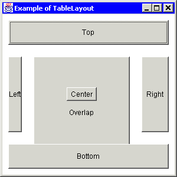 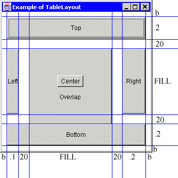
The image on the far left is a snapshot of the frame created with the above program. The image on the near left is the snapshot with lines added to show where the row and column border are. The column widths are shown on the bottom, and the row heights are shown on the right.
As you can see, this example uses TableLayout to create a border of b pixels around the controls.
This is an effective technique to create a "insets" in a container that has none. Since b is just a double
with a non-negative integer value, the border can be made any size.
This example also shows how to put spaces between components. In this case, a space of 20 pixels horizontally and vertically separates most of the buttons. Some layout managers require the use of "padding" components to accomodate blankspace. With TableLayout, you need only specify a row or column size and place no component in that row or column.
The left and right buttons occupy a single cell and are always the same size as the cell. The top and bottom buttons each span five cells. It is just as easy to make the top and bottom buttons single celled and the left and right buttons multicelled. TableLayout can be used anywhere you would use BorderLayout by creating a grid similar to the one shown in this example. Furthermore, you will have more flexibility with TableLayout.
The button labeled "center" is both in the center cell and is center justified. For this reason, the button is allocated it's preferred size. If the frame is made very small, the "center" button will shrink. But it will never be larger than it's preferred size, no matter how large the frame is.
The button labeled "overlap" is partly obscured by the center button and the bottom button. Since the overlap button was added last, it is on the bottom of the z-order.
Due to the column and row sizes specified, the top button will always have the same area as the bottom button, and the right button will always be exactly twice the size of the left button.
This example shows how TableLayout offers more functionality than GridLayout. The showGridWindow method utilizes GridLayout to lay out its components. The showTableWindow method utilizes TableLayout to provide the same layout. The showTableWindow2 method utilizes TableLayout but allows cells to be selectively empty -- a feature that GridLayout cannot support. The output of this example is shown below.
package example;
import java.awt.*;
import java.awt.event.*;
import javax.swing.JButton;
import layout.TableLayout;
public class GridVersusTable
{
protected static Frame showGridWindow ()
{
// Create frame
Frame frame = new Frame("GridLayout");
frame.setFont (new Font("Helvetica", Font.PLAIN, 14));
frame.setLayout (new GridLayout(2, 0));
// Create and add buttons
frame.add (new JButton("One"));
frame.add (new JButton("Two"));
frame.add (new JButton("Three"));
frame.add (new JButton("Four"));
// Show frame
frame.pack();
frame.setLocation (0, 10);
frame.show();
return frame;
}
protected static Frame showTableWindow ()
{
// Create frame
Frame frame = new Frame("TableLayout");
frame.setFont (new Font("Helvetica", Font.PLAIN, 14));
// Set layout
double f = TableLayout.FILL;
double size[][] = {{f, f}, {f, f}};
frame.setLayout (new TableLayout(size));
// Create and add buttons
frame.add (new JButton("One"), "0, 0");
frame.add (new JButton("Two"), "1, 0");
frame.add (new JButton("Three"), "0, 1");
frame.add (new JButton("Four"), "1, 1");
// Show frame
frame.pack();
frame.setLocation (200, 10);
frame.show();
return frame;
}
protected static Frame showTableWindow2 ()
{
// Create frame
Frame frame = new Frame("TableLayout");
frame.setFont (new Font("Helvetica", Font.PLAIN, 14));
// Set layout
double f = TableLayout.FILL;
double size[][] = {{f, f}, {f, f}};
frame.setLayout (new TableLayout(size));
// Create and add buttons
frame.add (new JButton("One"), "0, 0");
frame.add (new JButton("Two"), "1, 1");
// Show frame
frame.pack();
frame.setLocation (400, 10);
frame.show();
return frame;
}
public static void main (String args[])
{
WindowListener listener =
(new WindowAdapter()
{
public void windowClosing (WindowEvent e)
{
System.exit (0);
}
}
);
Frame frame = showGridWindow();
frame.addWindowListener(listener);
frame = showTableWindow();
frame.addWindowListener(listener);
frame = showTableWindow2();
frame.addWindowListener(listener);
}
}
|
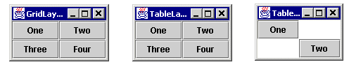
This illustration shows the three frames created by the above program. The first two frames function identically, showing that TableLayout subsumes the functionality of GridLayout. TableLayout does this without requiring more complex code. The third frame in the illustration shows where TableLayout surpasses GridLayout. TableLayout allows cells to be skipped. It also allows the rows and columns to have different sizes. GridLayout does not. GridBagLayout also subsumes the functionality of GridLayout, but at the cost of complexity as our next example will show.
GridBagLayout Versus TableLayout
The following example shows that while GridBagLayout and TableLayout offer similar functionality, the TableLayout is easier to use.
package example;
import java.awt.*;
import java.awt.event.*;
import javax.swing.JButton;
import layout.TableLayout;
public class GridBagVersusTable
{
protected static void makeButton
(Frame frame, String name, GridBagLayout gridbag, GridBagConstraints c)
{
JButton button = new JButton(name);
gridbag.setConstraints(button, c);
frame.add(button);
}
protected static Frame showGridBagWindow ()
{
// Create layout and contraints object
GridBagLayout gridbag = new GridBagLayout();
GridBagConstraints c = new GridBagConstraints();
// Create frame
Frame frame = new Frame("GridBagLayout");
frame.setFont (new Font("Helvetica", Font.PLAIN, 14));
frame.setLayout (gridbag);
// Create buttons, add buttons, and apply constraints
c.fill = GridBagConstraints.BOTH;
c.weightx = 1.0;
makeButton (frame, "Button1", gridbag, c);
makeButton (frame, "Button2", gridbag, c);
makeButton (frame, "Button3", gridbag, c);
c.gridwidth = GridBagConstraints.REMAINDER; //end of row
makeButton (frame, "Button4", gridbag, c);
c.weightx = 0.0; //reset to the default
makeButton (frame, "Button5", gridbag, c); //another row
c.gridwidth = GridBagConstraints.RELATIVE; //next-to-last in row
makeButton (frame, "Button6", gridbag, c);
c.gridwidth = GridBagConstraints.REMAINDER; //end of row
makeButton (frame, "Button7", gridbag, c);
c.gridwidth = 1; //reset to the default
c.gridheight = 2;
c.weighty = 1.0;
makeButton (frame, "Button8", gridbag, c);
c.weighty = 0.0; //reset to the default
c.gridwidth = GridBagConstraints.REMAINDER; //end of row
c.gridheight = 1; //reset to the default
makeButton (frame, "Button9", gridbag, c);
makeButton (frame, "Button10", gridbag, c);
// Show frame
frame.pack();
frame.setLocation (0, 10);
frame.show();
return frame;
}
protected static Frame showTableWindow ()
{
// Create frame
Frame frame = new Frame("TableLayout");
frame.setFont(new Font("Helvetica", Font.PLAIN, 14));
// Set layout
double f = TableLayout.FILL;
double p = TableLayout.PREFERRED;
double size[][] = {{f, f, f, f}, {p, p, p, p, f}};
TableLayout layout = new TableLayout(size);
frame.setLayout (layout);
// Create buttons labeled Button1 to Button10
int numButton = 10;
JButton button[] = new JButton[numButton + 1];
for (int i = 1; i <= numButton; i++)
button[i] = new JButton("Button" + i);
// Add buttons
frame.add (button[1], "0, 0");
frame.add (button[2], "1, 0");
frame.add (button[3], "2, 0");
frame.add (button[4], "3, 0");
frame.add (button[5], "0, 1, 3, 1");
frame.add (button[6], "0, 2, 2, 2");
frame.add (button[7], "3, 2, 3, 2");
frame.add (button[8], "0, 3, 0, 4");
frame.add (button[9], "1, 3, 3, 3");
frame.add (button[10], "1, 4, 3, 4");
// Show frame
frame.pack();
frame.setLocation (400, 10);
frame.show();
return frame;
}
public static void main (String args[])
{
WindowListener listener =
(new WindowAdapter()
{
public void windowClosing (WindowEvent e)
{
System.exit (0);
}
}
);
Frame frame = showGridBagWindow();
frame.addWindowListener (listener);
frame = showTableWindow();
frame.addWindowListener (listener);
}
}
|
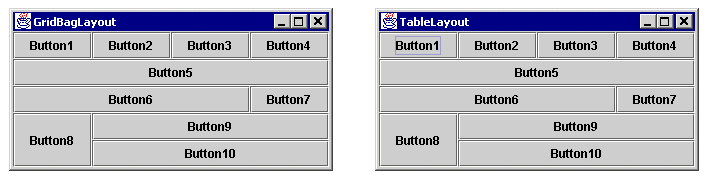
The first illustration shows the two frames immediately after they are created. The frames are identical
except for their titles. The two frames behave nearly identically, though two exceptions are noted below.
The code that creates the TableLayout is smaller and conceptually simpler. This is because the constraints
used with GridBagLayout affect what the other constraints mean. The code for the GridBagLayout, taken from
a well-known Sun example, requires constructing different kinds of restraints depending on which cell is
being used. The rightmost cell of each row uses REMAINDER and the others use
RELATIVE. This requires the user to think about one component in terms of the other components.
The components are not constrained independently. Furthermore, GridBagLayout requires that the user thinks
of the y-axis as being different from the x-axis. Axis symmetry is broken, and broken symmetry increases complexity.
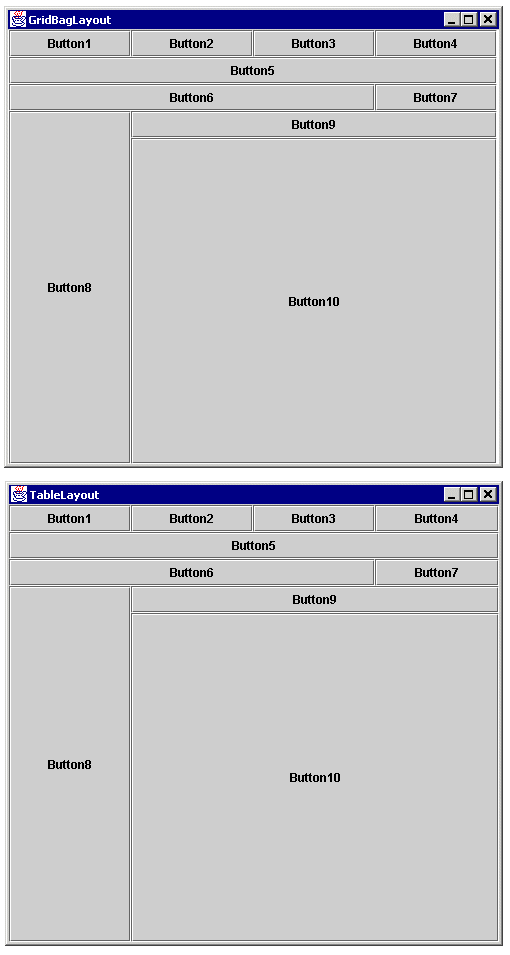
The second illustration shows the two frames after being enlarged. The frames are nearly identical. There is one subtle difference. The GridBag frame has a two-pixel wide column of unused space. It might appear to be three pixels wide because the buttons use a white line as their right border, but it's exactly two pixels. This is because of a rounding error. If the TableLayout code were to use 0.25 as the widths of each of the four columns, its frame would suffer the same problem. Since the desire behavior is most likely to constructively use this slack, the TableLayout code uses fill columns. The use of fill columns and rows is a second advantage of TableLayout.
To be fair to GridBagLayout, it is possible to distribute the slack (i.e., extra pixels) among the columns that GridBagLayout implicitly makes by using the weightx and weighty properties of the GridBagConstraints object. It is also possible to justify components within a cell using the anchor property of GridBagConstraint. In fact, everything that can be done with GridBagLayout can be done with TableLayout and vice versa. The advantage of TableLayout is that it is much easier to understand and use.
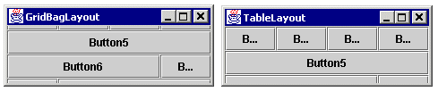
The second difference between GridBagLayout and TableLayout is illustrated when the frames are made
significantly smaller than their preferred sizes (i.e., the size they were made by calling pack).
Every layout manager runs into the problem of how to lay out content when there simply isn't enough room
to display all of it. Each layout manager handles it differently. FlowLayout lets the last components fall
outside the visible area of the container. GridLayout shrinks the components down to 1x1 or even 0x0 pixels.
GridBagLayout is a bit more complicated. In our example, it first loses the bottom components and then the
top components, favoring the center ones. TableLayout always looses the scalable components first, followed
by the bottom-most and right-most absolute components. It's arguable whether or not this difference matters.
In either case, it's just the best a layout manager can do with a bad situation.
Both TableLayout and GridBagLayout can be used to layout components in just about any way. The chief difference between the two is the conceptional and code simplicity that TableLayout allows. This simplicity is the result of five factors.
First, the x-axis and y-axis are symmetical. Everything that applies to the horizontal also applies to the
vertical and vice versa. With GridBagLayout, rows are terminated when a component with a constraint of
GridBagConstaint.REMAINDER is found. So the person adding components is already thinking of the grid as
an array of rows rather than a two dimensional array of cells. In TableLayout, the rows and columns are
independent and conceptuality separate.
Second, the contraints placed on one component do not affect what constraints need to be placed on another
component. With GridbagLayout, the last component in a row needs to be constrained with
GridBagConstaint.REMAINDER. If you decide to remove that component, the constraints on the one before
it needs to be changed from RELATIVE to REMAINDER. With TableLayout changing
one component's constraints never required changing another component's constraints.
Third, it is conceptuality easier to think of a container being partitioned by rows and columns than by a stream of components. Users are familiar with spreadsheets and the TableLayout is similar, although not identical, to the way that spreadsheets work. Rows and columns are first class citizens in TableLayout which makes it easier to get a bird's eye view of the container's partitions.
Fourth, TableLayout uses four justifications that are analogous to paragraph justifications in word processors. These justifications handle both scaling and aligning components whose perferred size is less than that of their cells. So there is no need for two separate concepts like fill and anchor as in GridbagLayout.
Fifth, with TableLayout there is no need to pad each component since padding and borders can be done with empty rows and columns. Since rows and columns can be created explicitly, components can easily be equally padded along both the x and y axis.
The following code creates a sample GUI with a variety of components.
package example;
import java.awt.*;
import java.awt.event.*;
import javax.swing.*;
import layout.TableLayout;
public class TypicalGui extends JFrame
{
public static void main (String args[])
{
new TypicalGui();
}
public TypicalGui ()
{
super ("A Typical GUI");
Container pane = getContentPane();
double b = 10;
double f = TableLayout.FILL;
double p = TableLayout.PREFERRED;
double size[][] = {{b, f, 5, p, 5, p, b}, {p, b, f, 10, p, b}};
TableLayout layout = new TableLayout(size);
pane.setLayout (layout);
addMenu(pane);
addCommandButtons(pane, layout);
addColorBoxes(pane, layout);
addTextArea(pane, layout);
allowClosing();
setSize (640, 480);
show();
}
public void addMenu (Container pane)
{
JMenuBar menuBar = new JMenuBar();
String menuText[] = {"File", "Edit", "View", "Help"};
String itemText[][] =
{{"New", "Open", "Save", "Print", "Exit"},
{"Cut", "Copy", "Paste"},
{"Zoom in", "Zoom out"},
{"About", "Index", "Search"}};
for (int i = 0; i < menuText.length; i++)
{
JMenu menu = new JMenu(menuText[i]);
menuBar.add (menu);
for (int j = 0; j < itemText[i].length; j++)
{
JMenuItem item = new JMenuItem(itemText[i][j]);
menu.add (item);
}
}
pane.add (menuBar, "0, 0, 6, 0");
}
public void addCommandButtons (Container pane, TableLayout layout)
{
JPanel buttonPanel = new JPanel();
pane.add (buttonPanel, "1, 4, 5, 4");
for (int i = 1; i <= 5; i++)
{
JButton button = new JButton("Button " + i);
buttonPanel.add (button);
}
}
public void addColorBoxes (Container pane, TableLayout layout)
{
Color color[][] =
{{Color.white, Color.black},
{Color.green, Color.blue},
{Color.red, Color.yellow},
{Color.pink, Color.orange},
{Color.magenta, Color.cyan}};
for (int i = 0; i < color.length; i++)
{
// Add a row for spacing and a row for the color boxes
layout.insertRow (2, TableLayout.PREFERRED);
layout.insertRow (2, 5);
// Add color boxes
pane.add (new ColorBox(color[i][0]), "3, 3");
pane.add (new ColorBox(color[i][1]), "5, 3");
}
// Remove the unnecessary leading space
layout.deleteRow (2);
}
public void addTextArea (Container pane, TableLayout layout)
{
int numRow = layout.getRow().length;
JTextPane textArea = new JTextPane();
pane.add (textArea, "1, 2, 1, " + (numRow - 4));
}
public void allowClosing ()
{
addWindowListener
(new WindowAdapter()
{
public void windowClosing (WindowEvent e)
{
System.exit (0);
}
}
);
}
//**************************************************************************
//*** Inner classes ***
//**************************************************************************
protected class ColorBox extends Component
{
protected Color color;
protected ColorBox (Color color)
{
this.color = color;
}
public void update (Graphics g)
{
paint (g);
}
public void paint (Graphics g)
{
Dimension d = getSize();
g.setColor (Color.black);
g.drawRect (0, 0, d.width - 1, d.height - 1);
g.setColor (color);
g.fillRect (1, 1, d.width - 1, d.height - 1);
}
public Dimension getPreferredSize ()
{
return new Dimension(40, 20);;
}
}
}
|
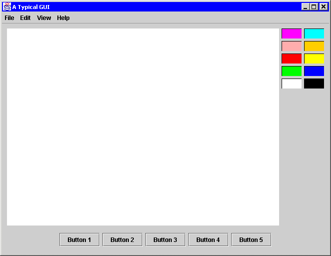
This GUI is composed of thirteen top-level components: ten colored boxes, one JMenuBar, one JTextPane, and one JPanel that is used to hold several JButtons. The code illustrates that rows can be added at runtime, thus making the GUI construction dynamic. Each pair of color boxes is added with two rows: one to contain the boxes and one to be used as a blank space.
This GUI also makes used of a menu bar outside of the border. The menu bar's row is a preferred row since the menu bar should not be resized and the height of the menu bar should not be hard-coded. TableLayout will make the row the right size for the menu bar regardless of what font or images are used.
Typically in a frame there is only one component that needs to be scaled. Although that component may contain a split pane or a scroll panel, it is still one component. This example shows a single, scalable component, a JTextPane. That JTextPane occupies many cells because it needs to be aligned with all the color boxes. But only one fill row and only one fill column is needed since only one component needs to be scaled.
Although not necessary, this example uses a panel to contain the buttons. The layout could be accomplished without using a nested container simply by adding more columns. However, the proper way of constructing the GUI is to use nested containers when some controls should be laid out independently of the other controls in the outer container. In this example, the buttons on the bottom are position independent of the JTextPane, the number of color boxes, or even the number of columns of color boxes. Conceptionally, the buttons are laid out independently, so they should be in their own container. Other examples of this include scroll panels, split panes, and group boxes.
An example of TableLayout using preferred rows and columns.
package example;
import java.awt.*;
import java.awt.event.*;
import javax.swing.*;
import layout.TableLayout;
public class Preferred extends JFrame
{
public static void main (String args[])
{
new Preferred();
}
public Preferred ()
{
super ("The Power of Preferred Sizes");
Container pane = getContentPane();
// b - border
// f - FILL
// p - PREFERRED
// vs - vertical space between labels and text fields
// vg - vertical gap between form elements
// hg - horizontal gap between form elements
double b = 10;
double f = TableLayout.FILL;
double p = TableLayout.PREFERRED;
double vs = 5;
double vg = 10;
double hg = 10;
double size[][] =
{{b, f, hg, p, hg, p, b},
{b, p, vs, p, vg, p, vs, p, vg, p, vs, p, vg, p, b}};
TableLayout layout = new TableLayout(size);
pane.setLayout (layout);
// Create all controls
JLabel labelName = new JLabel("Name");
JLabel labelAddress = new JLabel("Address");
JLabel labelCity = new JLabel("City");
JLabel labelState = new JLabel("State");
JLabel labelZip = new JLabel("Zip");
JTextField textfieldName = new JTextField(10);
JTextField textfieldAddress = new JTextField(20);
JTextField textfieldCity = new JTextField(10);
JTextField textfieldState = new JTextField(2);
JTextField textfieldZip = new JTextField(5);
JButton buttonOk = new JButton("OK");
JButton buttonCancel = new JButton("Cancel");
JPanel panelButton = new JPanel();
panelButton.add (buttonOk);
panelButton.add (buttonCancel);
// Add all controls
pane.add (labelName, "1, 1, 5, 1");
pane.add (textfieldName, "1, 3, 5, 3");
pane.add (labelAddress, "1, 5, 5, 5");
pane.add (textfieldAddress, "1, 7, 5, 7");
pane.add (labelCity, "1, 9");
pane.add (textfieldCity, "1, 11");
pane.add (labelState, "3, 9");
pane.add (textfieldState, "3, 11");
pane.add (labelZip, "5, 9");
pane.add (textfieldZip, "5, 11");
pane.add (panelButton, "1, 13, 5, 13");
allowClosing();
pack();
setResizable (false);
show();
}
public void allowClosing ()
{
addWindowListener
(new WindowAdapter()
{
public void windowClosing (WindowEvent e)
{
System.exit (0);
}
}
);
}
}
|
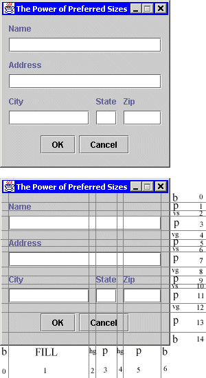
This example uses only absolute and preferred columns. If fact the frame itself is not resizable. The purpose of using TableLayout is several fold. First, no sizes or absolute positions of controls need to be hard-coded. This makes the code more flexible and allows different fonts and control to be used. Second, without a RAD tool, it is easier to construct the GUI using TableLayout than by putting in absolute positions by hand. Third, it is easier to see what is being done in the code than with hard-coded component bounds. Fourth, the spacing and borders can be adjusted easily. Another reason is a philosophical issue. Using a layout manager is a more elegant way of putting together a GUI. The final benefit to using TableLayout even for non-resizble containers is that the preferred size of the container is figured out for you.
A simple technique to quickly design a GUI is to use a humble pen and paper. Sketch what you want the GUI to look like, and then use a straight edge to form rows and columns. Make sure to include the gaps between components so that you can easily adjust them. Then number the rows and columns and assign sizes to them based on whether or not you want their components to be resized in the horizontal or vertical direction. Once this is done, the code is easy to construct and will look just like your sketch.
The preceeding examples have expressed the layout constraints in terms of a simple string. This is a convenient short-hand notation, but it is not the only way to express constraints. The TableLayoutConstraints class provides a means of manipulating constraints as objects. The following three blocks of code are equivalent.
|
|
|
|
|
There are two constructors for TableLayoutConstraints. One takes no parameters and defaults to the short-hand "0, 0" or occupy a single cell at (0, 0) with full horizontal and vertical justification. The second constructor takes six parameters: col1, row1, col2, row2, hAlign, and vAlign. The first pair is the upper-left corner of the cell set. The second pair is the lower-right corner. If the first and second pair match, the constraint refers to a single cell and the third pair is used for justification.
Since the fields of TableLayoutConstraints are public, they may be manipulated directly. This was done for convenience. The third example shows the fields being manipulated to set constraints. Since TableLayout will make a copy of the TableLayoutConstraints, you can use the same constraints object when setting the constraints for more than one component.
TableLayout has two methods pertaining to TableLayoutConstraints.
getContstraints(Component)returns the TableLayoutConstraints associated with the given component.
setConstraints(Component, TableLayoutConstraints)replaces the given component's constraints with the newly supplied constraints. The next example will make use of these methods.
A Rapid Application Development Tool
The following example illustrates how to dynamically create, resize, and remove rows and columns from a TableLayout, and how to dynamically retrieve and change the constraints of a component. This example is a simple Rapid Application Development tool that will generate code using TableLayout. The complete source code available in RadTool.java, but for simplicity, we will look at the pertinent individual parts.
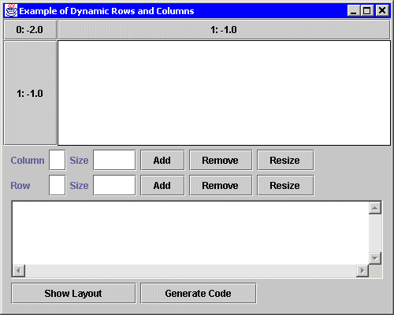
Upon startup, the example looks like this. In the top section of the frame, there is a panel containing
several JButtons labeled "0: -2.0", "1:-1.0", and "1:-1.0". These JButtons mark the columns and rows
that partition the panel. JButtons were used instead of JLabels so that it would be easy to see where
the row and column borders are. The labels of the JButtons refer to the row or column number and the
row or column size. For example, "0: -2.0" means that row 0 has a height of
TableLayout.PREFERRED (-2.0). "1: -1.0" means row 1 has a height of
TableLayout.FILL (-1.0). "2: 50" would mean row 2 has a height of 50 pixels, and "3: 0.25"
would mean that row 3 has a height of 25% of the scalable space.
On startup, there are two rows and two columns. The JButtons in row 0 are the column headers and the JButtons in column 0 are the row headers. As we create, resize, and remove rows and columns, these headers will be adjusted. The panel containing these buttons will simply be referred to as 'the panel'.
Below the panel are controls for creating, resizing, and removing rows and columns. The first text field is the row or column number to manipulate. The second text field is a size to use when creating or resizing a row or column. Below those controls is a text area that is used for textual output. Whenever the layout is changed, the current row and column sizes will be shown in this text area. Also, any error messages are also shown in the text area. The "Show Layout" button below the text area is used to show the current layout sizes in the text area. The "Generate Code" button will put fully functional code in the text area for creating a frame that mimics the current state of the panel.
Clicking on a white spot in the panel will create a component (a Smiley face) that occupies the cell clicked. Clicking on the Smiley will pop up a dialog box that can be used to adjust the constraints of the Smiley.
Play with the GUI tool to see how it works. As you add rows and columns, you will also see lines separating the rows and columns.
Constructing a GUI
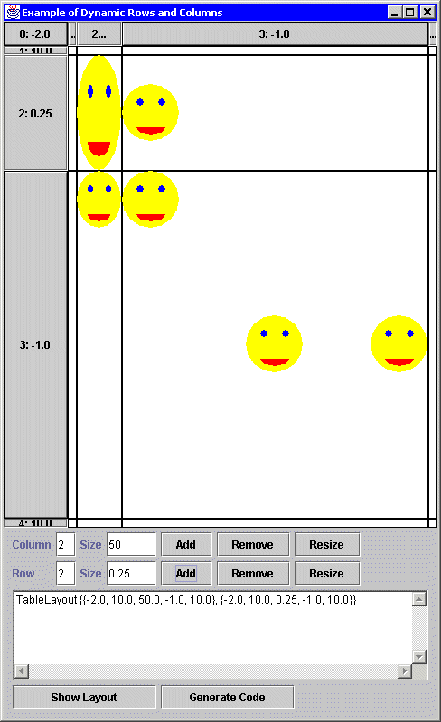
The picture above shows the RAD tool after a couple of rows and columns are inserted and a couple of Smileys are added. The picture below shows the execution of the code generated by the RAD tool. The Smileys are replaced with java.lang.Button objects. Notice that in this example, there are more than one Smiley in cell (3, 3). They don't overlap because of the container size, their preferred sizes, and their justifications.
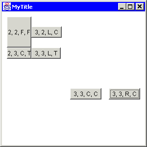The generated code for the above example is given below.
import java.awt.*;
import java.awt.event.*;
import layout.TableLayout;
public class MyClass
{
public static void main (String args[])
{
Frame frame = new Frame("MyTitle");
frame.setBounds (100, 100, 300, 300);
double size[][] =
{{-2.0, 10.0, 50.0, -1.0, 10.0}, // Columns
{-2.0, 10.0, 0.25, -1.0, 10.0}}; // Rows
frame.setLayout (new TableLayout(size));
Button button;
button = new Button("3, 3, R, C");
frame.add (button, "3, 3, R, C");
button = new Button("3, 3, L, T");
frame.add (button, "3, 3, L, T");
button = new Button("2, 3, C, T");
frame.add (button, "2, 3, C, T");
button = new Button("3, 2, L, C");
frame.add (button, "3, 2, L, C");
button = new Button("2, 2, F, F");
frame.add (button, "2, 2, F, F");
button = new Button("3, 3, C, C");
frame.add (button, "3, 3, C, C");
frame.addWindowListener
(new WindowAdapter()
{
public void windowClosing (WindowEvent e)
{
System.exit (0);
}
}
);
frame.show();
}
}
|
Dynamically Manipulating Rows and Columns
The actionPerformed method is called whenever one of the add, resize, remove buttons is pressed. The code
in this method (shown below) dynamically changes the layout.
public void actionPerformed (ActionEvent e)
{
// Get row and column information from text fields
int row = getInt(textfieldRowNumber);
int col = getInt(textfieldColumnNumber);
double rowSize = getDouble(textfieldRowSize);
double colSize = getDouble(textfieldColumnSize);
// Get source of the event
Object source = e.getSource();
try
{
// Update layout
if (source == buttonAddColumn)
layout.insertColumn (col, colSize);
else if (source == buttonRemoveColumn)
layout.deleteColumn (col);
else if (source == buttonResizeColumn)
layout.setColumn (col, colSize);
else if (source == buttonAddRow)
layout.insertRow (row, rowSize);
else if (source == buttonRemoveRow)
layout.deleteRow (row);
else if (source == buttonResizeRow)
layout.setRow (row, rowSize);
// Update headers, etc. to reflect layout's change
updateHeader();
updateBox();
// Layout and repaint panel since the layout has changed
panel.doLayout();
panel.repaint();
// Update layout's description
textArea.setText(layout.toString());
// Generate code if desired
if (source == buttonGenerateCode)
generateCode();
}
catch (Throwable error)
{
error.printStackTrace();
textArea.setText (error.toString());
}
}
|
The important part of the code is the call to the insertColumn/Row, deleteColumn/Row, setColumn/Row, methods. A single
line of code is all that is needed to insert, remove, or resize a row or column. The updateHeader method updates
all the row and column headers to reflect the new set of rows and columns. The updateBox method puts empty square
buttons in the whitespace of the panel to mark the cells and to insert Smileys. The call to panel.doLayout is
necessary to layout the panel since the panel's layout has changed. The call to panel.repaint is necessary because
some components will be removed and we don't want their images still being displayed.
Final Word
If you want to get more familiar with the nuts and bolts of dynamic layout manipulation, take a look at RadTool.java. If you just want to know how to use the TableLayout APIs, consult the TableLayout documentation. To get more familar with the runtime behavior of TableLayout, play with the RadTool. Adjust the rows and columns, insert some components, and resize the frame to see TableLayout at work.
The first layout managers that Java programmers learned were easy to use, but could do very little. Eventually, Java programmers tackle GridBagLayout because they need more functionality and flexibility, but most inevitably go back to using either no layout manager or nested simple layout managers because GridBagLayout is to complicated to use. The next series of layout managers introduced layout managers that were simple and could do more advanced tasks, but they were specialized and designed for specific Swing controls. TableLayout is a general-purpose layout manager that is as easy to use as GridLayout and even more powerful than GridBagLayout with the ability to dynamically add, remove, and resize rows and columns. Best of all, TableLayout is simple and easy to understand.
There is more to come in TableLayout Tutorial, Part 2: Building Powerful GUIs. That article will demonstrate how TableLayout can be used to accomplish various common and sophisticated tasks.